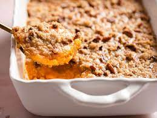

Sweet Potato Casserole

Description
A sweet and creamy sweet potato casserole topped with crunchy pecans and brown sugar.
Ingredients
sweet potatoes
heavy cream
eggs
vanilla
butter
brown sugar
pecans
Steps
Peel and boil sweet potatoes until soft
Mush sweet potatoes and combine in large bowl with heavy cream, eggs, butter, and vanilla
Transfer mix into dish container and spread evenly
Combine excess butter, brown sugar, and pecans in small bowl
Spread brown sugar and pecan mix evenly over casserole mix
Bake in oven at 400 degrees for 13-18 minutes until top is slightly browned
Wait for casserole to cool slightly and serve